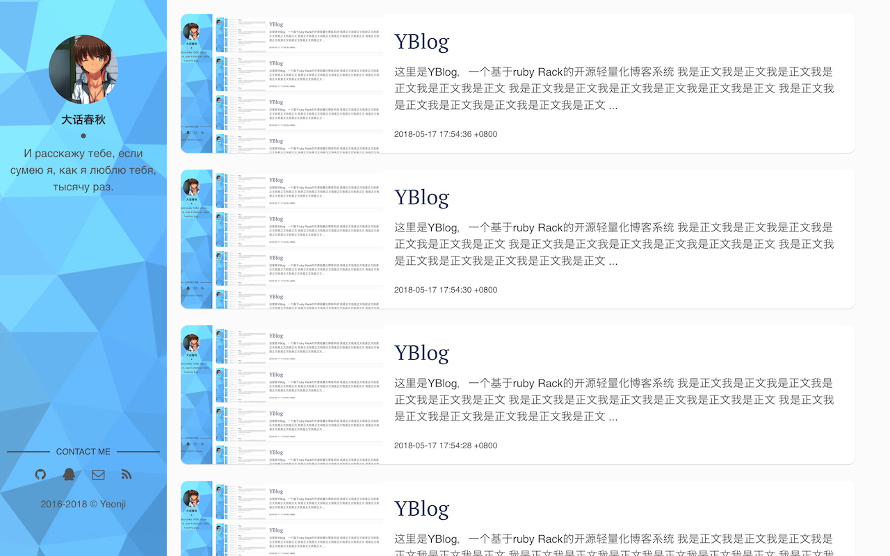

YBlog
这里是YBlog，一个基于Rack的开源轻量化极易搭建的自助博客系统。
你可以在这里轻松使用Markdown来进行博客写作。

使用说明
快速部署
- 请确认ruby版本号 >= 2.1.0
- 使用gem安装nokogiri和rack
gem install rackgem install nokogiri - 下载项目源代码到本地
- 在项目目录下运行
rackup - 开始写blog吧
Login & Writing
什么你没找到登录入口？
猛戳头像下你自己名字试试？（是不是很恶趣味
便捷升级
- 下载新版本源代码
- 将原始版本的data目录复制到新版本目录下（替换）
rackup
轻松定制
- 编辑
settings.rb修改各种文本信息 - 编就
config.ru修改端口和监听地址 - 替换
data/image里面的默认背景和头像 - 修改
data/users/admin.json内的用户名和密码（文件名要和用户名一致哦） - 如果你想要，可以到
script/templet目录下修改模版来进行深度定制
好了这已经是你自己的blog了
Components / Libraries
样式表: normalize.css
编辑器: editor.md
（我知道编辑页面很丑，我也不知道怎么写好看啊，反正能用就行了吧）
默认头像: (ˉ﹃ˉ)EM1234 @ pixiv.net
默认背景: lowpoly
License
The Apache License. see LICENSE file
返回主页
Last Modified: 2018-05-17 20:10:41 +0800, Loading Time: 1ms
Short-circuits.org
Xidian University
266 Xinglong Section of Xifeng Road, Xi’an, Shaanxi710126
Copyright © Short-circuits.org 2016-2018